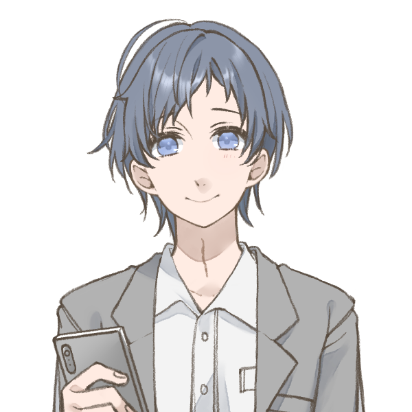

"しめいかん" いちはら りゅうすけ
“使命官” 市原 隆介
STYLE
フェイト●
カブトワリ
イヌ◎
AGE / GENDER
34歳 / 男
AFFILIATION
ブラックハウンド機動捜査課
PROFILE SUMMARY
ブラックハウンド機動捜査課警部補。
入隊からそれなりの年数を経ているものの、甘チャンかつ生真面目でお人よし。
それ故色々な人にこき使われる日々だが、本人曰く「それも良いかなぁ」だとか。
銃の腕前は隊内でも一目置かれるほどだが、撃つことを嫌う節がある。
PLAYER
紅河
社交界 Sector
“ニーヴェリット”
“白銀” ニーヴェ
元力生物。自認ハイランダー。暴走するとバサラがペルソナとなる。外遊びが好きで無邪気な性格。
“BGM” おくとみ そうた
“背景音楽” 奥冨 奏太
社交界で顔が効くピアニストで、調整を取り持つフィクサー。
見た目華やかだけど結構泥臭くドブ板営業する。
みどりのけんじん
“翠の賢人” ベリル・ワイズマン
有能なコンサル。占いが得意で社交界にも通じている。
その実はミューの理想に共鳴する剣十字修道会の一員。